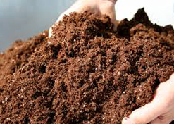
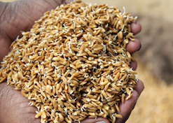
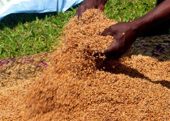
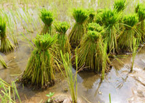
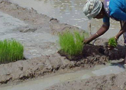

సేంద్రీయ ఎరువులు

నారుమడులు పోయాలనుకున్న భుములకు వేసవి దుక్కికి ముందుగానే హెక్టారుకు 5-10 టన్నుల పశువుల ఎరువును వేయాలి, నారుమడులను పోయడానికి పొలంలో 10వ భాగాన్ని ఎ౦పిక చేసుకోవాలి.ఎ౦పిక చేసుకున్న పొలానికి 5-10 సె౦. మీ. నిళ్ళు పెట్టె బాగా కలియ దున్నాలి.తరువాత మట్టెగడ్డలన్ని మెత్తగయ్య్లోలా బాగా దమ్ము చేయాలి. బాగా దమ్ము చేసిన తరువాత పొలం ను౦డి కలుపు మొక్కలు లేకు౦దా జాగ్రత్త పడాలి.
విత్తన మోతాదు

నాటే పద్ధతికి 20-25 కిలోలు, వెదజల్లటానికి (గరువు) భూముల్లో) 24-౩0 కిలోలు, వెదజల్లటానికి (గోదావరి జిల్లాల్లో) 16-20 కిలోలు, గొర్రుతో విత్తటావికి (వర్షాధారపు వరి) 30-36 కిలోలు, శ్రి పద్ధతిలో 2 కిలోలు సరిపోతుంది.
విత్తన శుద్ది

కిలో విత్తనానికి 2.5 గ్రాముల కార్చండజిమ్ కలిపి 24 గ౦టల తరువాత నారుమడిలో చల్లుకోవాలి. దంప నారుమళ్ళ కైతే లీటరు నీటికి 1 గ్రాము కార్బండజిమ్ కలిపి, ఆ ద్రావణ౦లో విత్తనాలను 24 గ౦టలు నానబెట్టీ , 24 గ౦టలు మ౦డెకట్టీ మొలకలను ద౦ప నారుమడిలో చల్లుకోవాలి. కిలో విత్తనాలు నానబెట్టడానికి లిటరు మందు నీరు సరిపోతుంది. పది లిటర్ల నీటికి 1.5 కిలోల ఉప్పు కలుపగా వచ్చిన ద్రావంలో ఎ౦పిక చేసుకున్న విత్తనాన్ని పోసి పైకి తేలిన తాలు విత్తనాలను తీసివేయాలి. ఉప్పునీటిలో మునిగిన గట్టీ విత్తనాలను నారు పోయడానికి వాడుకోవాలి. మడిలో చల్లే ము౦దు 24 గంటల పాటు మంచినీటిలో విత్తనాలను నానబెట్ఠాలి . విత్తనాల ద్వారా సంక్రమి౦చే లెగుళ్ళ నివారణ కోస౦ కిలో విత్తనానికి 3 గ్రా. దైరమ్ లేదా కాప్టాన్ మ౦దును కలిపి విత్తన శుద్ది చేయాలి. నారుమడిలో చల్లేము౦దు మొలకెత్తిన విత్తనాన్ని 0.2 శాత౦ క్లోరిప్రేరిఫాస్ ద్రావణంలో నాసబెట్టీ చల్లుకోవాలి. దీని వల్ల నారుమడిలో ఆకు తినే పురుగులు, ఉల్లికోడు ,మొవ్వపురుగు ఆశి౦చకు౦డా ఉ౦టాయి.
కొసలు త్రుంచడం

తల్లి పురుగులు గ్గ్రుడును కోసల మీద పెడుతుంది కావున నారు నాటేటప్పడు కొసలు విరిచి నాటాలి. దీనితో గ్గ్రుడును నిర్మూలించవచ్చ .
నారుమడి

దమ్ము చేసిన నేలను 10 మీ. పోడవు 1 మీ. వెడల్పుతో నారుమడిని చేసుకోవాలి. నారుమడిలోని నీరు పోషకాలు బయటపోకుండా ఉండేలా గట్లు వేసుకోవాలి. గట్ట్లును సమంగాను గట్టిగాను పోయాలి. మడిలో చెతాచెదారం లేకుండా జాగ్రత్తపడాలి . నారుమడి బురద పదునులో ఉండాలి. నారుమడులు ఎత్తుగా ఉండేలా జాగ్రత్తపడాలి. రెండు మడుల మధ్యలో 20సెం. మీ వెడల్పులో కాలువ తియాలి. కాలువలోని మట్టిని తీసి మడిలో వేసి నారుమడిని ఎత్తుగా చేసుకోవాలి. నారుమడి మొత్తం చదునుగా ఉండాలి.
సస్యరక్షణ
విత్తిన 10 రోజులకు కార్బోఫ్యూరాన్ ౩జి గుళికలు సెంటు నారుమడికి 160 గ్రా చొప్పున వేయాలి లేదా మోనోక్రోటోఫాస్ 1.6 మి.లి లేక క్లోరిఫైరిఫాన్ 2.0 మి.లి. లీటరు నీటికి కలిపి విత్తిన 10 రోజులకు మరియు 17 రోజులకు పిచికారి చేయాలి లేదా నారు తీయటానికి 7 రోజుల ముందు సెంటు నారుమడికి 160 గ్రా కార్బోఫ్యూరాన్ గుళికలు తక్కువ నీటిలో వేయాలి జింకు లోపాన్ని గమని లిటరు నీటికి 2గ్రా జింకు సల్ఫేటు ద్రావణాన్ని పిచికారి చేయాలి. చలి ఎక్కువగా ఉండే దాళ్వా వరి సాగులో జింకు లోప ల్కక్షణాలు ప్రస్పుటంగా కనిపిస్తాయి.
ఎరుపులు
5 సెంట్ల నారుమడిని 2 కిలోలు నత్రజని(1 కిలో విత్తనం చల్లేముందు,మరో కిలో విత్తిన 12-౧౪ రోజులకు ), 1 కిలో భాస్వరం మరియు 1 కిలో పొటాష్ నిచ్చే ఎరువులను దుక్కిలో వేయాలి. చలి ఎక్కువగా ఉండే ప్రాంతాల్లో భాస్వరం రెట్టింపు వేయాలి.
ఆరోగ్యవంతమైన నారు పెంచటానికి సూచనలు
నారుమడి 10 -12 రోజులు ముందే దమ్మ చేసి చదును చేయాలి.
నీరు పెట్టటానికి, తీయటానికి వీలుగా కాలువలను ఏర్వాటు చేయాలి.
5 సెంట్ట నారుమడికి 2 కిలోల నత్రజని(1 కిలో విత్తనం చల్లేముందు,మరో కిలో విత్రిన 12-14 రోజులుకు), 1 కిలో భస్వరం మరియు 1కిలో పొటాష్ నిచ్చే ఎరువులను దుక్కిలో వేయాలి . చలి ఎక్కువగా ఉండే ప్రాంతాల్లో భాస్వరం రెట్టింపు వేయాలి.
మొలకలక కట్టిన విత్తనాన్ని సెంటుకు 5 కిలోల చొప్పున చల్లుకోవాలి.
నారు పూరిగా పురివిచ్చుకునే వరకు ఆరు తడులు ఇచ్చి తర్వాత పలుచగా నీరు నిలకట్టాలి.
జింకు లోపాన్ని గమనిసై లీటరు నీటికి 2 గ్రా జింకు ద్రావణాన్ని పిచికారి చేయాలి. చలి ఎక్కువగా ఉండే దాళ్వా వరి సాగులో జింకు లోప లక్షణాలు ప్రస్ఫుటంగా కనిపిస్తాయి
విత్తిన 10 రోజులకు కార్బోఫ్యూరాన్ ౩ జి గుళికలు సెంటు నారుమడికి 160 గ్రా చొప్పున వేయాలి లేదా మోనోక్రోటోఫాస్ 1.6 మి.లీ లేక క్రోరిఫైరిఫాస్ 2.0 మి.లి. లీటరు నీటికీ కలిపి విత్తిన 10 రోజులకు మరియు 17 రోజులకు పిచికారి చేయాలి లేదా నారు తియటానికి 7 రోజుల ముందు సెంటు నరుముడికి 160 గ్రా కార్బోఫ్యూరాన్ గులికలి తక్కువ నీటిలో వేయాలి
తల్లి పురుగులు గ్రుడ్లను కోసల మీద పెడుతుంది కావున నారు నాటేటప్పుడు కొసలు విరిచి నాటాలి. దీనితో గ్రుడ్లను నిర్మూలించవచ్చ .